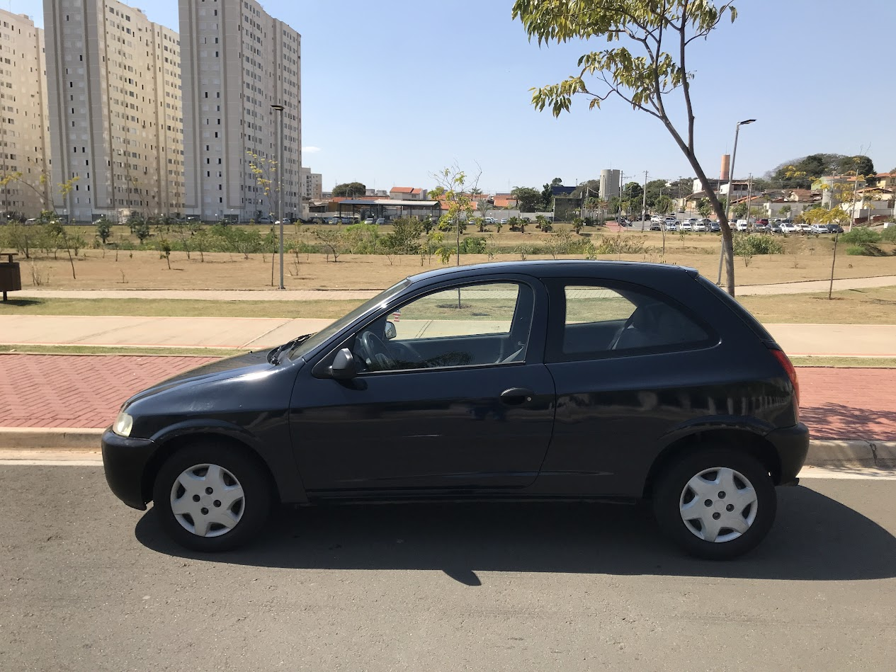

Celta Azul
VHC 1.0 8V

Sobre ele
Detalhes do projetin
Cor:
Azul San Marino Gm original, o projeto é futuramente migrar para BaySide Blue (azul do gtr do bryan) ou algum tom de azul parecido

Motor:
VHC 1.0 8V
Está com 270.000km e pretendo trocar pelo motor 1.8 de cobalt/spin pela facilidade e manter aspirado mantendo o câmbio do 1.0 por bastante tempo pensando em talvez turbinar no futuro
Rodas:
Aro 13 de ferro furação 4 X 100, pretendo trocar por rodas TE37, BBS GT7 ou as rodas do civic 2004, todas aro 15